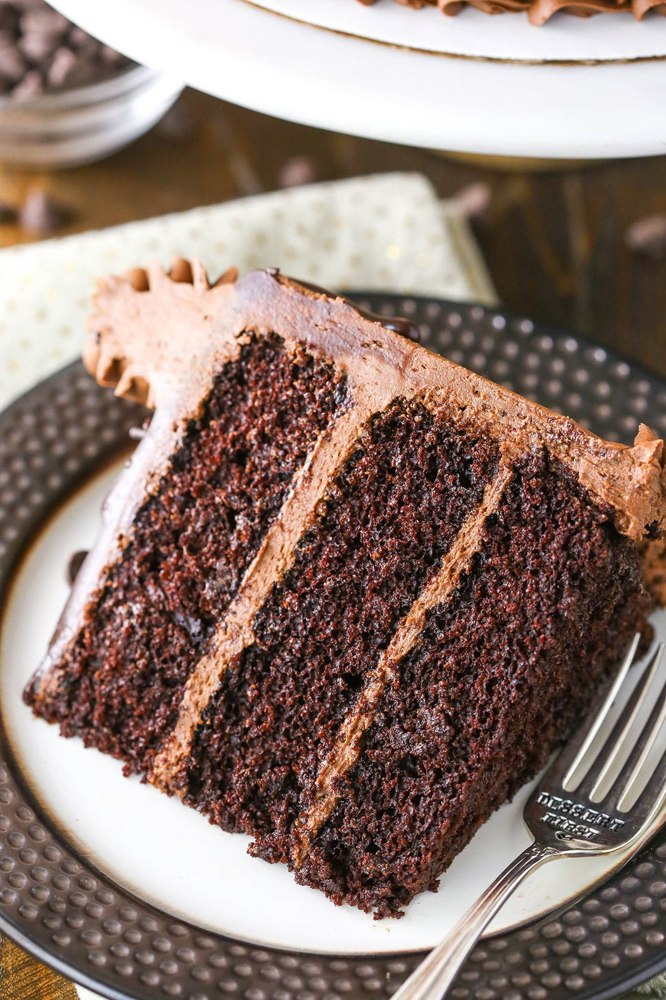

There’s a reason I call this the Best Chocolate Cake Recipe:
it’s so good restaurants have asked
me to start making it for
them! This moist and fluffy chocolate cake is going to be your
go-to
recipe once you try it.

This is the kind of chocolate cake everyone should have in their
recipe collection. An easy,
one-bowl cake with the perfect crumb
that’s covered with a simple homemade chocolate
buttercream
frosting. This moist cake is made completely from scratch and has
incredible
chocolate flavor.
I literally cannot stop eating this cake whenever I make it.
I made this cake for my niece’s birthday last year. When it was
served, one of the moms asked
my sister-in-law where she’d
gotten the cake. She pointed at me and the mom came over to ask
me about it. Turns out she has two restaurants in Atlanta and was
curious if I’d be interested in
making cakes for her restaurant.
Whaaaaaat?!?
Pretty neat, but I actually said no. However,
this cake is THAT good! Make it and you just
might be
asked to bake for a restaurant. And whether you want to actually
do that or not,
don’t you want to be the one with a cake
that’s so good you could bake for a restaurant?
You know you do.
After testing many chocolate cake recipes, this one is hands down the best. Here’s why:
If you’re familiar with my recipes, then you’ve probably seen
several variations on chocolate
cake. This is my original
chocolate cake and is still my favorite to this day. It’s my go-to.
That
said, I definitely have more than one recipe! Here is
how they differ:
Was created after getting quite a few comments from people who
were confused about the low
baking temperature of this cake. So
the newer version is baked at 350 degrees, eliminating the
confusion. As a result of the changes made in that recipe, it’s
not quite as tender as this original
version. But it can be
handy if you need a more sturdy cake for something you’re
decorating.
Both of these chocolate cakes use oil, which I
think works really well in chocolate cake especially.
It adds great moisture.
Uses butter instead of oil simply because some readers prefer the
taste of butter and I aim to please!
Plus, as far as sturdiness
goes, butter based cakes are generally much more sturdy. That’s
why this
version of chocolate cake holds up much better to
having holes cut into it and being filled like a piñata.
So to recap, the main difference between this recipe and my others
is that this one is the
most tender and moist,it uses oil instead of butter
and it is baked at a lower temperature
(which means it also
takes a little longer to bake).
You won’t need any fancy ingredients to make this easy chocolate
cake. Here’s a quick overview of
what you’ll need. Be sure to
scroll down to the recipe card for specific amounts.
One thing to note is that this cake has a very thin batter>
nd no, it’s not a typo – it’s a slow-bake
cake that bakes at
300 degrees.
So, here’s how you make it:
I usually make the chocolate frosting while the cakes cool. Here’s how:
Once cakes are cool, remove cake domes from top with a large
serrated knife. See my tips on how to level a
cake and how to
stack a cake.
Technically you could just stop right here. By this point, you’ll
have an amazing cake with chocolate buttercream
frosting! But
if you want to go a bit fancy, this chocolate ganache is an easy
way to do it.
That’s it. Just two steps! Then you add the ganache to your cake:
Add a few sprinkles to the cake, if desired, then serve. Sprinkles are totally optional of course, but why not?
This cake can be stored for 3-4 days on the counter. It should be well covered under a cake dome if possible.
You can also store it in the fridge to extend its shelf life to
4-5 days, but the frosting will harden. When I store a frosted
cake in the fridge I usually place the cake in the fridge uncovered
until the frosting hardens (about 2 hours). Then I
cover it with saran wrap.
When you are ready to have some cake, simply cut a slice and warm
it in the microwave (if desired) for about 15-30
seconds. The frosting will soften right up and you’ll have warm
chocolate cake to enjoy.
Prep Time: 40 minutes
Cook Time: 30 minutes
Total Time: 1 hour 10 minutes
Yield: 12-14 slice